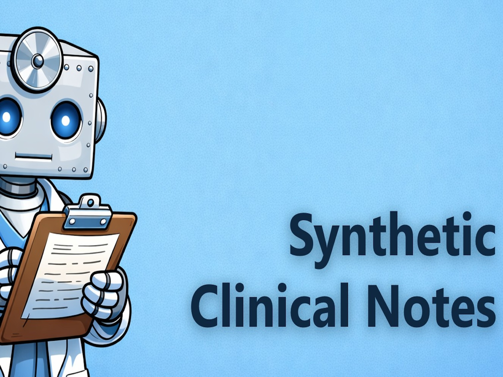
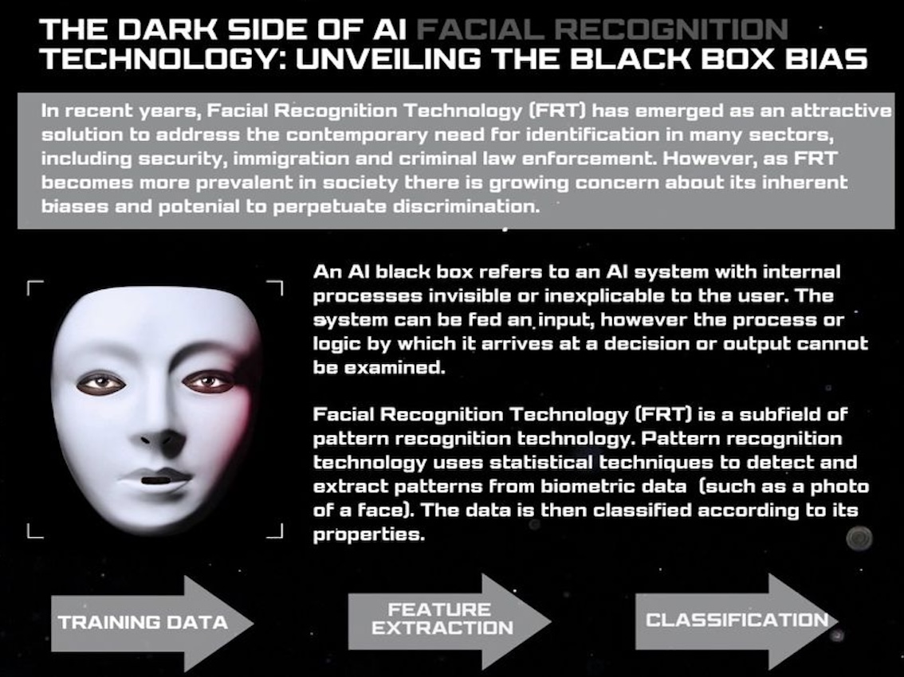
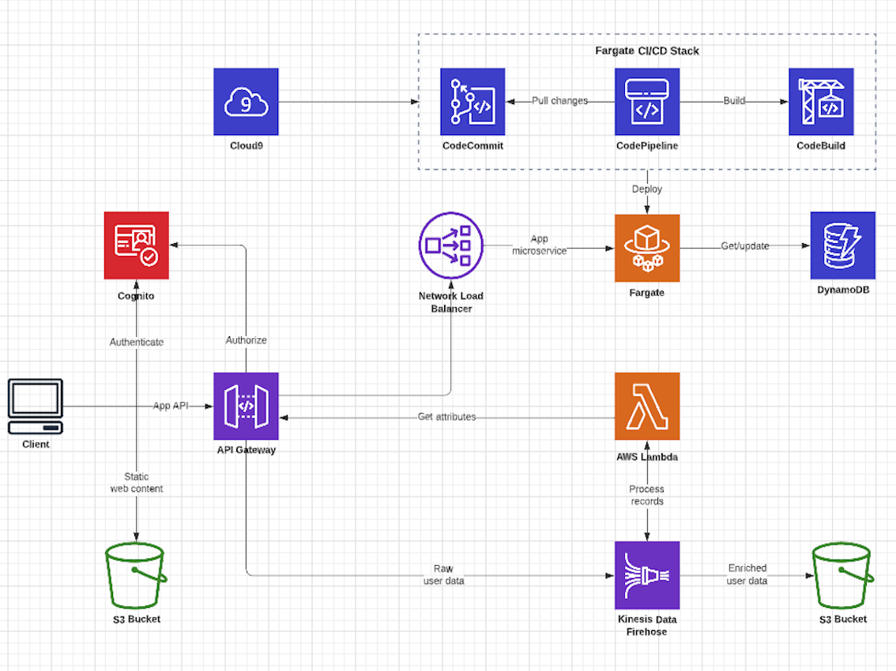

Hi, I'm Mobolu.
I'm an Artificial Intelligence undergraduate with a passion for using technology as a tool for positive change. I'm on a software engineering placement with the AI & Machine Learning team at Kraken Technologies, studying AI at King's College London, and I speak about tech and AI ethics on the side.

About
I'm a second-year AI student at King's College London. Right now I'm about two months into a year-long placement with Kraken's AI & Machine Learning team, which mostly means I spend my days figuring out how to make AI systems actually work in production, not just in a notebook.
Outside of that, I write and speak about AI ethics, and about what it actually takes to get into tech if you don't look like the people who usually do. I run @mobsintech for that, mostly aimed at people earlier in the process than I am.
Experience
2026 — my placement year! found a loVe for Software Engineering
- Jun 2026 – Present Software Engineer Intern (AI & ML) Kraken Technologies · Full-time · Hybrid, London
- Apr 2026 Software Engineering Spring Intern JPMorganChase · On-site, London
2025 — 4 internships, 4 different fields
- Aug 2025 Insight Week PDT Partners · On-site, London
- Aug 2025 Technology Work Experience Week Kerv · On-site, London
- Jul – Aug 2025 King's Undergraduate Research Fellow King's College London · Part-time
- Jun – Aug 2025 Data Science and Applied AI Intern NHS England · London
2023 — A year of exploration
- Aug 2023 Summer Work Experience Circana · London
- Jul 2023 Work Experience Week Aon · Greater London
- Jul 2023 Work Experience Week G-Research · Greater London
- Feb 2023 Work Experience Day National Grid · London
2022 — My first taste of tech!
- Jul – Aug 2022 Data Science Summer Intern QBE Insurance · Greater London
- Apr 2022 – Apr 2024 Data Science Mentee Deliveroo · Greater London
Research & Projects
Add a summary of anything you've researched, published, or worked on academically here, papers, coursework projects, dissertations, or anything you want people to be able to find.

Synthetic Clinical Notes: Diversifying AI training data in the NHS & LLM Evals

Generating synthetic clinical notes using large language models to support NHS England's data science and AI work. View on GitHub →

Exploring Algorithmic Bias in Facial Recognition Technology

Academic research poster, titled ‘The Dark Side of AI Facial Recognition: Unveiling the Black Box Bias’, which addresses the problem of algorithmic bias in facial recognition technology. View on LinkedIn →

Content Moderation SaaS

A microservices-based SaaS that automatically screens user comments and messages for toxic, abusive, or harmful language using a fine-tuned DistilBERT model, routing flagged content to human moderators for review. View on GitHub →
Opportunities
A running list of programmes, scholarships, and schemes worth applying to if you're a young person or woman looking to get into tech.
Sixth Form Students
Undergraduate Students
Women & BAME
Speaking & advocacy
I speak on AI ethics and on making tech feel reachable for people who don't usually see themselves in it. Still early days on this front, but the goal is to keep doing bigger versions of it over time.
I'll list more talks and features here once I've done a few more.
- 2025 Keynote Speaker King's College London Black Access Project Event
- 2023 International Women's Day Speech Celebrating Women in STEM · Westcliff High School for Boys